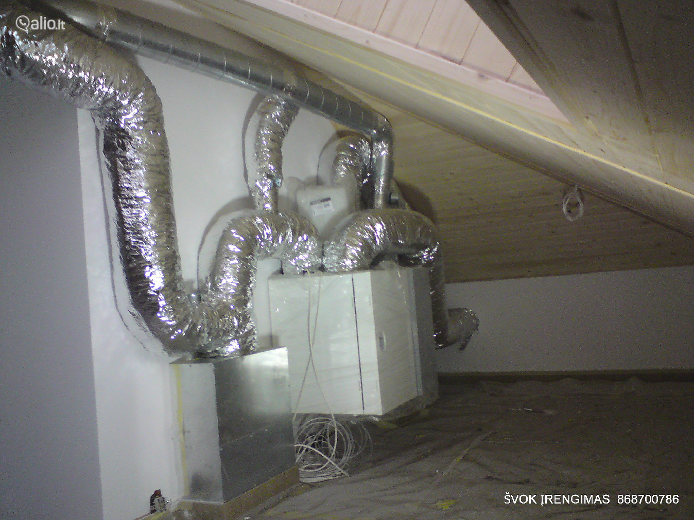

Rekuperatoriai, rekuperacinės sistemos | namams24.lt
- Rekuperatoriai, kaina | rekuperatoriucentras.lt
Rekuperatoriai ir minirekuperatoriai (275) Akcijos ir naujienos; Rekuperatoriai (96) Mini rekuperatoriai (18) Geoterminiai šilumokaičiai rekuperatoriai; Rekuperatorius + šilumos siurblys „oras-oras“ (3) Lanksčių ortakių sistemos (82) Priedai (55) Plyšiniai difuzoriai (10) Difuzoriai (7) Įleidžiami, priglaistomi difuzoriai (4) - Rekuperatoriai, rekuperacinės sistemos | namams24.lt
Rekuperatoriai butams gali būti įrengiami pasirinkus iš plataus modelių sąrašo. Pagrindinis buto pertvarkymas būtų tas, kad reikėtų plano, kaip kuo geriau pravesti ortakius. Geri meistrai pasirūpins, kad nuo to nenukentėtų Jūsų buto lubų aukštis. Taip pat Jūs visada galite rinktis ir sieninius rekuperatorius. - Rekuperatoriai | Mini Rekuperatoriai | Gedarta.lt
Rekuperatoriai – tai šilumokaičiai, kuriuose iš kambario išeinantis šildomas oras didžiąją dalį šilumos atiduoda šaltam orui, patenkančiam iš lauko. Tai yra, – išeinantis oras šildo įeinantį. Žiema prisimename šiltas vasaros dienas ir laukiame, kol grįš šiluma. Tačiau mes negalime laukti gamtos malonumų, todėl ... - Rekuperatoriai butui | sildymas-vedinimas.lt
Rekuperatoriai namams, butams ir komercinių patalpų vėdinimui. Rekuperatoriai su rotaciniais, plokšteliniais šilumokaičiais. Įrenginių našumas nuo 50 iki 25 000 m3/h. Mūsų kataloge esantys rekuperatoriai gali ne tik vėdinti bet ir šildyti patalpas (žr. konkretų modelį). - Rekuperatoriai | Orokondicionieriai.pro
Rekuperatoriai – pagrindiniai prietaisai, kurie yra skirti užtikrinti tinkamą vėdinimą ir šilumos išlaikymą. Konsultuokitės tel. +370 670 26670 - Rekuperatoriai | Vilpra.lt: Šiluma Jūsų namams
Domina rekuperatoriai, vėdinimo, kondicionavimo ir šildymo sistemos bei montavimo paslaugos gera kaina? Mes galime padėti! Susisiekite tel. +370 (693) - Rekuperatoriai | Šilumos atgavimo įrenginiai ...
Efektyviai veikiantys mini rekuperatoriai privatiems ir verslo objektams. Skirtingos charakteristikos rekuperacinė įranga, geriausios kainos garantija. - Rekuperatoriai | Šilumos siurblių ir vėdinimo sistemų ...
Rekuperatoriai + Užklausti + Titon Rekuperatorius + Atrea Rekuperatorius + Itho Rekuperatorius + Brofer Rekuperatorius + Brink Rekuperatorius. Siekiame, kad kiekvienas klientas būtų patenkintas atliktų darbų kokybė ... - Beortakiniai rekuperatoriai - HomeAir
Brofer firmos rekuperatoriai pasižymi aukštu šilumos grąžos efektyvumu – iki 90%, energijos efektyvumo klasė A. Šios firmos produktų serijoje rasite ne tik begalo platų asortimentą, bet ir prekes, kurios stebins inovatyviais inžineriniais sprendimais bei savo kokybe.Rekuperatorių galingumas vyrauja nuo 160 m 3 /h iki 470 m 3 /h ... - Rekuperatoriai | Oris.lt - Šildymas, Šaldymas, Vėdinimas
Rekuperatoriai - šiuolaikiškas ir praktiškas sprendimas, reikalaujantis nedidelių investicijų ir tuo pačiu padeda taupyti. Jų sistemos yra yra kelių rūšių.

Prekių pristatymas Atsiskaitymas Informacija pirkėjui lietuvių kalba lietuvių kalba Русский Kontaktai
Telefonas: +370 699 28337 / +370 699 28444
El. paštas: info@namams24.lt
0 Krepšelis / Tuščias Your cart × Jūsų krepšelyje nėra prekių Židiniai Tiesus stiklas Kampinis stiklas Lenktas stiklas Prizminis stiklas Dvipusis stiklas Tripusis stiklas Krosnelės Ketinės krosnelės Plieninės krosnelės Akumuliacinės krosnelės Krosnelės su keramika Krosnelės su virykle Krosnelės su šilumokaičiu Granulinės krosnelės Katilai Kieto kuro katilai Skysto kuro katilai Katilai-viryklės Elektriniai katilai Granuliniai katilai Dujiniai katilai Šilumos siurbliai Gruntiniai šilumos siurbliai Oras/vanduo šilumos siurbliai Oras/oras šilumos siurbliai Hibridiniai šilumos siurbliai Kasetiniai Fotovoltinės saulės elektrinės Oro kondicionieriai Sieniniai Kasetiniai Konsoliniai Kanaliniai Mobilūs Vandens šildytuvai Kieto kuro vandens šildytuvai Greitaeigiai vandens šildytuvai Kombinuoti vandens šildytuvai Elektriniai vandens šildytuvai Akumuliacinės talpos Be šilumokaičio Su šilumokaičiu Daugiafunkcinės talpos Radiatoriai Plieniniai Aliuminiai Ketiniai Vandens siurbliai, filtrai ir hidroforai Kaminai ir dūmtraukiai Keramikiniai kaminai Vieno kanalo kaminai Dvisieniai dūmtraukiai Įdėklai į kaminus Pirties įranga Malkinės pirties krosnelės Elektrinės krosnelės Rankšluosčių džiovintuvai Kita įranga namams Oro sausintuvai Kaloriferiai Centriniai dulkių siurbliai Rekuperatoriai Rotaciniai rekuperatoriai Plokšteliniai rekuperatoriai Lankstūs ortakiai Kolektoriai Difuzorių dėžutės Mini rekuperatoriai Centriniai dulkių siurbliai Search Prisijungti 0 Krepšelis Menu Pagrindinis RekuperatoriaiRekuperatoriai
Filtras Rodoma 1-24 iš 153 prekės(-ių) Kaina, mažiausia - didžiausia Aktualumas Pavadinimas, A - Z Pavadinimas, Z - A Kaina, mažiausia - didžiausia Kaina, didžiausia - mažiausia 24 12 24 36 -15% Prekyboje Difuzorių dėžutėsProdmax difuzoriaus dėžutė, 2 x 75/125 mm
Prodmax W4PRO-9403 17,00 EUR 20,09 EUR Prekės aprašymas Dėžutės naudojamos tiekiamo arba šalinamo oro difuzorių pajungimui su dvejomis atšakomis. Pagaminta iš cinkuotos skardos.Be izoliacijos.Ortakio atvamzdžio skersmuo 75 mm.Dėžutės brėžinys: -7% Prekyboje Difuzorių dėžutėsDifuzorius DAL lygiu fasadu, d.100 arba d. 125, apvalus
W4MET-DAL100-125 18,00 EUR 19,00 EUR Prekės aprašymas Oro tiekimo difuzorius, apvalus. Galima rinktis 100 mm arba 125 mm pajungimo skersmens.Difuzoriai dažyti pusiau matine balta spalva.Šie difuzoriai skirti oro tiekimui į patalpą.DAL100 difuzoriaus skersmuo 140 mm, DAL125 - 173 mm. -15% Prekyboje Difuzorių dėžutėsProdmax difuzoriaus dėžutė, 3 x 75/125 mm
Prodmax W4PRO-10326 24,00 EUR 28,10 EUR Prekės aprašymasDėžutės naudojamos tiekiamo arba šalinamo oro difuzorių pajungimui su trijomis atšakomis. Pagaminta iš cinkuotos skardos.Be izoliacijos.Ortakio atvamzdžio skersmuo 75 mm.Dėžutės brėžinys: -7% Prekyboje Difuzorių dėžutėsDifuzorius DKS storu fasadu, d.100 arba d. 125, kvadratinis
W4MET-DKS100-125 31,00 EUR 33,00 EUR Prekės aprašymas Universalus - skirtas oro tiekimui į patalpą ir ištraukimui iš jos - difuzorius, kvadratinis. Galima rinktis 100 mm arba 125 mm pajungimo skersmens.Difuzoriai dažyti pusiau matine balta spalva.Rekomenduojamas oro kiekiui - 55m³. -7% Prekyboje Difuzorių dėžutėsDifuzorius DKP, įleidžiamas, d.100 arba d. 125, kvadratinis
W4MET-DKP100-125 35,00 EUR 38,00 EUR Prekės aprašymas Universalus - skirtas oro tiekimui į patalpą ir ištraukimui iš jos - difuzorius, kvadratinis, įleidžiamas su montavimo lizdu, plonu fasadu. Galima rinktis 100 mm arba 125 mm pajungimo skersmens.Difuzoriai dažyti pusiau matine balta spalva.Rekomenduojamas oro kiekiui - 55m³. -7% Prekyboje Difuzorių dėžutėsDifuzorius DKG, priglaistomas, d.100, kvadratinis
W4MET-DKG100 40,00 EUR 43,00 EUR Prekės aprašymas Universalus - skirtas oro tiekimui į patalpą ir ištraukimui iš jos - difuzorius, kvadratinis, potinkinis, priglaistomas. Pajungimo skersmuo 100 mm. Difuzoriai dažyti pusiau matine balta spalva.Rekomenduojamas oro kiekiui - 55m³. -7% Prekyboje Difuzorių dėžutėsDifuzorius DAG, glaistomas, d.100 arba d. 125, apvalus
W4MET-DAG-100-125 40,00 EUR 43,00 EUR Prekės aprašymas Universalus - skirtas oro tiekimui į patalpą ir ištraukimui iš jos - difuzorius, apvalus, glaistmas. Galima rinktis 100 mm arba 125 mm pajungimo skersmens.Difuzoriai dažyti pusiau matine balta spalva.Rekomenduojamas oro kiekiui - 55m³. -7% Prekyboje Difuzorių dėžutėsDifuzorius DKG, priglaistomas, d.125, kvadratinis
W4MET-DKG125 40,00 EUR 43,00 EUR Prekės aprašymas Universalus - skirtas oro tiekimui į patalpą ir ištraukimui iš jos - difuzorius, kvadratinis, potinkinis, priglaistomas. Pajungimo skersmuo 125 mm.Difuzoriai dažyti pusiau matine balta spalva.Rekomenduojamas oro kiekiui - 55m³. -7% Prekyboje Difuzorių dėžutėsDifuzorius DAP, įleidžiamas, d.100 arba d. 125, apvalus
W4MET-APV-100-125 40,00 EUR 43,00 EUR Prekės aprašymas Universalus - skirtas oro tiekimui į patalpą ir ištraukimui iš jos - difuzorius, apvalus, įleidžiamas. Galima rinktis 100 mm arba 125 mm pajungimo skersmens.Difuzoriai dažyti pusiau matine balta spalva.Rekomenduojamas oro kiekiui - 55m³. -7% Prekyboje Difuzorių dėžutėsDifuzorius DKG, priglaistomas, d.160, kvadratinis
W4MET-DKG160 49,00 EUR 53,00 EUR Prekės aprašymas Universalus - skirtas oro tiekimui į patalpą ir ištraukimui iš jos - difuzorius, kvadratinis, potinkinis, priglaistomas. Pajungimo skersmuo 160 mm. Difuzoriai dažyti pusiau matine balta spalva.Rekomenduojamas oro kiekiui - 55m³. -10% Prekyboje Plokšteliniai rekuperatoriai4-ių padėčių valdiklis Renovent rekuperatoriams
Renovent W4REN-540262 66,00 EUR 73,80 EUR Prekės aprašymas 4-ių žingsnių valdiklis Renovent rekuperatorių veikimui reguliuoti. Turi indikatorių, kuris parodo kada reikia keisti filtrą. Valdiklį lengva įdiegti, prijungti prie sistemos. -30% Prekyboje Rotaciniai rekuperatoriaiValdiklis C6.2 Komfovent rekuperatoriams
Komfovent W4AMA-C6.2 93,00 EUR 133,10 EUR Prekės aprašymas C6.2 pultelis yra su lietimui jautriais mygtukais, parametrai nustatomi išmaniaisiais telefonais ir planšetiniais kompiuteriais.Pagrindinės pultelio funkcijos:· tiekiamo, šalinamo ir patalpų oro temperatūros palaikymas;· pastovaus ir kintamo oro srautų valdymo režimai;· savaitinis režimo tvarkaraštis bei atostogų planavimo režimai;·... -37% Prekyboje Lankstūs ortakiaiLankstus plastikinis ortakis Flex AS AB, d.75, 50 metrų
W4FRA-FLEX-75 109,00 EUR 172,50 EUR Prekės aprašymas Lengvai montuojamas plastikinis ortakis, skersmuo d.75 mm. Ortakis pagamintas iš didelio tankio polietileno, naudojamas oro tiekimui ir šalinimui. Jis yra atsparus mechaniniams pažeidimams. Vidinis paviršius yra lygus, todėl slėgio nuostoliai yra nedideli.Parduodamas rulonais, rulone yra 50 metrų. -15% Prekyboje Plokšteliniai rekuperatoriaiBrofer DSPRF valdiklis
Brofer W9BRO-DSPRF 113,00 EUR 133,00 EUR Belaidis Brofer rekuperatoriaus valdiklis, kabinamas ant sienos. Juo valdomas pūtimo greitis, pranešama, kada reikia keisti filtrą, greičio nustatymas, turbo funkcija, perspėjimai apie klaidingą veikimą. Prekyboje Plokšteliniai rekuperatoriaiVallox rekuperatorių valdiklis
Vallox W9VAL-VALLOX-VALDIKLIS 127,00 EUR My Vallox Control valdymo pultas skirtas Vallox rekuperatorių valdymui. Pulteliu galima nustatyti vieną iš keturių režimų - Namų , Tuščių namų , Turbo , Židinio .Namų režime oras patalpose yra pakeičiamas kartą per dvi valandas. Nustatymai yra lengvai keičiami ir modifikuojami naudojant mygtukus.Tuščių namų režime rekuperavimo lygis galima sumažinti... -37% Prekyboje Lankstūs ortakiaiLankstus plastikinis ortakis Flex AS AB, d.90, 50 metrų
W4FRA-FLEX-90 160,00 EUR 254,00 EUR Prekės aprašymas Lengvai montuojamas plastikinis ortakis, skersmuo d.90 mm. Ortakis pagamintas iš didelio tankio polietileno, naudojamas oro tiekimui ir šalinimui. Jis yra atsparus mechaniniams pažeidimams. Vidinis paviršius yra lygus, todėl slėgio nuostoliai yra nedideli.Parduodamas rulonais, rulone yra 50 metrų. -10% Prekyboje Plokšteliniai rekuperatoriaiValdiklis Renovent rekuperatoriams Brink Air Control
Renovent W4REN-AIR-CONTROL 211,00 EUR 234,70 EUR Prekės aprašymas Programuojamas valdiklis Renovent Flair ir Excellent rekuperatoriams. Galima nustatyti 4 veikimo režimus: atostogų, ekonomiško veikimo, normalaus arba aukšto veikimo režimus.Bevielis valdiklis montuojamas patalpoje, kurios temperatūra yra tarp 0 ir 50°C. Labai svarbu valdiklio nemontuoti virš radiatorių, saulės atokaitoje ar kitose... Prekyboje Plokšteliniai rekuperatoriaiValdiklis Salda rekuperatoriams Stouch
Salda W4SAL-STOUCH 299,00 EUR Valdiklis valdo Salda rekuperatorius. Montuojamas ant sienos, valdomas sensoriniais mygtukais, skaičiai atvaizduojami ekrane.Galima nustatyti 4 ventiliatoriaus greičius, turbo režimą, galima prijungti CO2 arba slėgio jutiklį. Prekyboje Plokšteliniai rekuperatoriaiRekuperatorius Smarty 2X P 1.1, 218m3/h
Salda W4SAL-SMARTY-2X-P-11 1 049,00 EUR Ypatumai:· aukšto energetinio efektyvumo rekuperatorius su plokšteliniu šilumokaičiu;· gamyboje naudojami žymiausių Europos gamintojų komponentai, sandarumas tikrinamas kiekviename gamybos etape, todėl sumažinamas ištraukiamo ir tiekiamo oro maišymąsis, kvapai iš patalpų nepatenka į tiekiamą orą;· iki -15oC lauko temperatūros nereikalingas papildomas... Prekyboje Plokšteliniai rekuperatoriaiRekuperatorius Smarty 2X V 1.1, 182 m3/h
Salda W4SAL-SMARTY-2X-V-11 1 119,00 EUR Ypatumai:· aukšto energetinio efektyvumo rekuperatorius su plokšteliniu šilumokaičiu;· kompaktiško dydžio - gali tilpti virtuvės spintelėje;· gamyboje naudojami žymiausių Europos gamintojų komponentai, sandarumas tikrinamas kiekviename gamybos etape, todėl sumažinamas ištraukiamo ir tiekiamo oro maišymąsis, kvapai iš patalpų nepatenka į tiekiamą orą;· iki... Prekyboje Plokšteliniai rekuperatoriaiRekuperatorius Smarty 3X P 1.1, 395 m3/h
Salda W4SAL-SMARTY-3X-P-11 1 299,00 EUR Ypatumai:· aukšto energetinio efektyvumo rekuperatorius su plokšteliniu šilumokaičiu;· gamyboje naudojami žymiausių Europos gamintojų komponentai, sandarumas tikrinamas kiekviename gamybos etape, todėl sumažinamas ištraukiamo ir tiekiamo oro maišymąsis, kvapai iš patalpų nepatenka į tiekiamą orą;· iki -15oC lauko temperatūros nereikalingas papildomas... Prekyboje Plokšteliniai rekuperatoriaiRekuperatorius Smarty 3X V 1.1, 394 m3/h
Salda W4SAL-SMARTY-3X-V-11 1 299,00 EUR Ypatumai:· aukšto energetinio efektyvumo rekuperatorius su plokšteliniu šilumokaičiu;· kompaktiško dydžio - gali būti montuojamas virš tipinės skalbimo mašinos;· gamyboje naudojami žymiausių Europos gamintojų komponentai, sandarumas tikrinamas kiekviename gamybos etape, todėl sumažinamas ištraukiamo ir tiekiamo oro maišymąsis, kvapai iš patalpų nepatenka... Prekyboje Plokšteliniai rekuperatoriaiRekuperatorius Smarty 4X P 1.1, 588 m3/h
Salda W4SAL-SMARTY-4X-P-11 1 699,00 EUR Ypatumai:· aukšto energetinio efektyvumo rekuperatorius su plokšteliniu šilumokaičiu;· gamyboje naudojami žymiausių Europos gamintojų komponentai, sandarumas tikrinamas kiekviename gamybos etape, todėl sumažinamas ištraukiamo ir tiekiamo oro maišymąsis, kvapai iš patalpų nepatenka į tiekiamą orą;· iki -15oC lauko temperatūros nereikalingas papildomas... Prekyboje Plokšteliniai rekuperatoriaiRekuperatorius Smarty 4X V 1.1, 583 m3/h
Salda W4SAL-SMARTY-4X-V-11 1 799,00 EUR Ypatumai:· aukšto energetinio efektyvumo rekuperatorius su plokšteliniu šilumokaičiu;· kompaktiško dydžio - gali būti montuojamas virš tipinės skalbimo mašinos;· gamyboje naudojami žymiausių Europos gamintojų komponentai, sandarumas tikrinamas kiekviename gamybos etape, todėl sumažinamas ištraukiamo ir tiekiamo oro maišymąsis, kvapai iš patalpų nepatenka... 1 2 3 7Rekuperatorius – tai priverstinės vėdinimo sistemos įrenginys, skirtas į patalpas tiekti šviežią pašildytą orą. Rekuperatoriaus veikimas yra paprastas: šiltas, iš vėdinamų patalpų lauk išmetamas oras šilumokaičio pagalba pašildo tiekiamą šviežią orą. Naudojami rekuperatoriai užtikrina patalpų vėdinimą su net iki 95 proc. šilumos atgavimu.
Pas mus parduodami šių populiariausių gamintojų kuriami rekuperatoriai: Flexit, Komfovent, Mitsubishi, Renovent, Samsung, SystemAir, Vaillant ir Wolf. Rekuperatoriai gali būti tiek su plokšteliniais, tiek rotaciniais šilumokaičiais. Gyvenamiesiams namams ir butams dažniausiai naudojamas ir rekomenduojamas rekuperacijos montavimas su rotaciniu šilumokaičiu, nes jie nesausina oro ir efektyviai dirba visus metus, tuo tarpu rekuperatoriai su plokšteliniu šilumokaičiu prie neigiamos lauko temperatūros apšąla ir išsijungia arba atšildymui naudoja elektros energiją.
Galime užtikrinti, kad mūsų konsultantai, dirbantys parduotuvė, padės Jums išsirinkti geriausią variantą ir Jūsų namus pasieks tinkamas rekuperatorius. Įvairaus tipo rekuperatoriai bei gausus jų asortimentas internetinėje „Namams24“ parduotuvėje patrauklia kaina. Prekes apžiūrėti ir išsirinkti tinkamiausią variantą galite internetu. Užsakymus pristatome per kurjerius sekančią darbo dieną, o Vilniuje, Kaune, Klaipėdoje, Šiauliuose, Panevėžyje, Alytuje, ar Utenoje prekes galite atsiimti ir patys - tą pačią darbo dieną. Jeigu jums taip pat reikalingas rekuperacijos montavimas – kreipkitės į mus.
Prekių katalogas Katilai Prekių kategorija Katilai Kieto kuro katilai Skysto kuro katilai Katilai-viryklės Elektriniai katilai Granuliniai katilai Dujiniai katilai Gamintojai Antara Ariston Atmos Aukštaitijos katilai Baxi Bosch Buderus Bullerjan Dakon Defro Daikin Ferroli Moderator Nibe-Biawar Opop Per-eko Gamintojai Galmet HKS Lazar Immergas Italtherm Junkers Kalvis Kamen Kordi Kostrzewa MBS Metalurgia Protech Radiant Saunier Duval Sime Gamintojai Stauber Stropuva Tech Termet Termofor Thermasis Thermona Thorma Vaillant Viadrus Vienybė Viessmann Vigas Wolf Žvakė Šilumos siurbliai Prekių kategorija Šilumos siurbliai Gruntiniai šilumos siurbliai Oras/vanduo šilumos siurbliai Oras/oras šilumos siurbliai Hibridiniai šilumos siurbliai Kasetiniai Gamintojai Alpha-Innotec AlpicAir Ariston Atlantic Baxi Cooper&Hunter Daikin HTW Electrolux Gamintojai Gree Electric Midea Mitsubishi Heavy Industries MDV Nibe Panasonic Vaillant Viessmann Wolf Rekuperatoriai Prekių kategorija Rekuperatoriai Rotaciniai rekuperatoriai Plokšteliniai rekuperatoriai Lankstūs ortakiai Kolektoriai Difuzorių dėžutės Mini rekuperatoriai Gamintojai Cooper&Hunter Blauberg Brofer Daikin Electrolux Ensy Flexit Komfovent Mitsubishi Gamintojai Salda Mitsubishi Electric Prodmax Renovent Samsung SystemAir Vallox Wolf Oro kondicionieriai Prekių kategorija Oro kondicionieriai Sieniniai Kasetiniai Konsoliniai Kanaliniai Mobilūs Gamintojai AlpicAir Cooper&Hunter Daikin Electrolux GREE electric Midea Mitsubishi Heavy Industries Samsung Židiniai Prekių kategorija Židiniai Tiesus stiklas Kampinis stiklas Lenktas stiklas Prizminis stiklas Dvipusis stiklas Tripusis stiklas Gamintojai Defro Hajduk Invicta Kratki Nordica Nordpeis Romotop Seguin Spartherm Krosnelės Prekių kategorija Krosnelės Ketinės krosnelės Plieninės krosnelės Akumuliacinės krosnelės Krosnelės su keramika Krosnelės su virykle Krosnelės su šilumokaičiu Granulinės krosnelės Gamintojai ABX Aduro Invicta Kratki MBS Nibe Gamintojai Nordica Nordpeis Romotop Termofor Thorma Victoria Vandens šildytuvai Prekių kategorija Vandens šildytuvai Kieto kuro vandens šildytuvai Greitaeigiai vandens šildytuvai Kombinuoti vandens šildytuvai Elektriniai vandens šildytuvai Gamintojai Ariston Atlantic Baxi Dražice Gorenje Nibe-Biawar Sunsystem Tatramat Vaillant Akumuliacinės talpos Prekių kategorija Akumuliacinės talpos Be šilumokaičio Su šilumokaičiu Daugiafunkcinės talpos Gamintojai Cordivari Dražice Sun System Vailant Radiatoriai Prekių kategorija Radiatoriai Plieniniai Aliuminiai Ketiniai Pirties įranga Prekių kategorija Pirties įranga Malkinės pirties krosnelės Elektrinės krosnelės Gamintojai Harvia Helo Kalvis Skamet Termofor Vienybė Fotovoltinės saulės elektrinės Kita įranga namams PREKIŲ KATEGORIJA Kita įranga namams Oro sausintuvai Kaloriferiai Centriniai dulkių siurbliai Gamintojai Flexit SistemAir Išvalyti viską GERAIFiltruoti pagal
Išvalyti viskąKategorijos
Kategorijos
Rotaciniai rekuperatoriai (37) Plokšteliniai rekuperatoriai (99) Lankstūs ortakiai (2) Difuzorių dėžutės (10) Mini rekuperatoriai (5)Prekės ženklas
Prekės ženklas
Atrea (2) Blauberg (1) Brofer (7) Daikin (7) Eco Fresh (2) Electrolux (6) Ensy (7) Flexit (6) Komfovent (22) Mitsubishi Electric (14) Prodmax (2) Renovent (25) Salda (7) Samsung (6) SystemAir (9) Vallox (7) Wolf (10) Zehnder (2)Montavimo tipas
Montavimo tipas
Ant sienos arba rėmo (5) Horizontalus (2) Pakabinamas (4) Palubinis (9) Vertikalus (23)Efektyvumo klasė
Efektyvumo klasė
A (3) A+ (3)Kilmės šalis
Kilmės šalis
Bulgarija (2) Italija (7) Japonija (21) Lenkija (2) Lietuva (39) Norvegija (11) Olandija (25) Suomija (7) Vokietija (13) Čekija (2) Švedija (15)Tipas
Tipas
Apvalus difuzorius (3) Kvadratinis difuzorius (5) Plokštelinis šilumokaitis (7) Priešpriešinių srautų šilumokaitis (6) Rotacinis šilumokaitis (19) Valdiklis (7)Galia, kW
Galia, kW
-Apie mus
Pagrindinis Apie mus Naujos prekės Sumažinta kainaInformacija
Atsiskaitymas Prekių pristatymas Prekių grąžinimas Informacija pirkėjui Privatumo politikaRekvizitai
UAB "Internetinė prekyba"
Adresas: Verkių g. 30B, LT-08200 Vilnius
Telefonas: 8-699-28339
El. paštas: info@namams24.lt
Kategorijos
Centriniai dulkių siurbliai Židiniai Krosnelės Momentiniai vandens šildytuvai Garo generatoriai Židinių montavimo medžiagos Elektriniai radiatoriai Nuotekų valymo įrenginiai Oro drėkintuvai Katilai Šilumos siurbliai Oro kondicionieriai Vandens šildytuvai Akumuliacinės talpos Radiatoriai Vandens siurbliai, filtrai ir hidroforai Top prekės Kaminai ir dūmtraukiai Specialūs pasiūlymai Pirties įranga Rankšluosčių džiovintuvai Kita įranga namams Rekuperatoriai Fotovoltinės saulės elektrinės Granulinės krosnelės Oras/vanduo šilumos siurbliai Įdėklai į kaminus Kieto kuro katilai Granuliniai katilai Dujiniai katilai2018 © UAB "Namams24". Visos teisės saugomos.
Mūsų svetainėje naudojami slapukai (angl. cookies). Jei sutinkate su slapukų naudojimu, spauskite „Supratau” ir toliau naudokitės svetaine. Slapukų naudojimo taisykles rastite čia.
Supratau